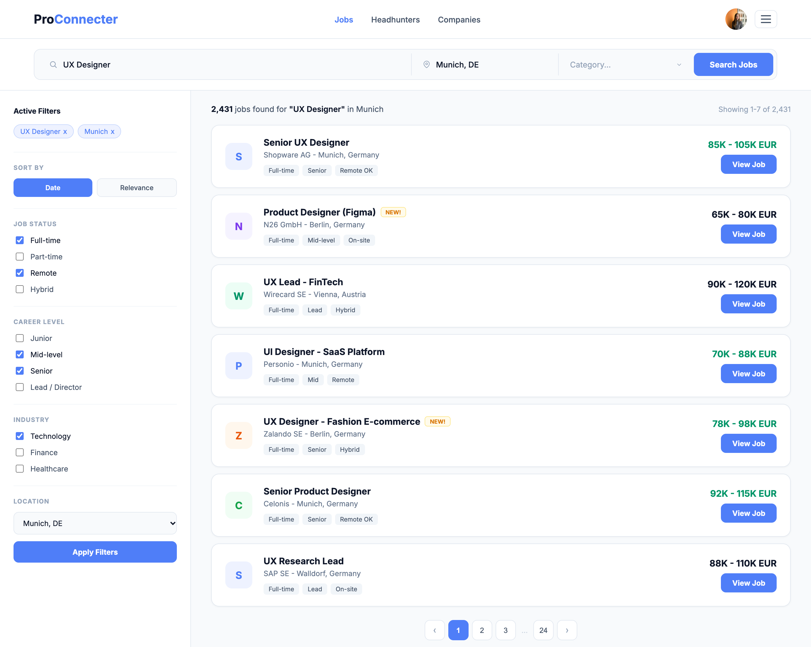

Core Feature
Search & Candidate Discovery
Search and candidate discovery are central to the platform. The redesign focuses on making it easier to explore professional profiles, refine search results and find relevant candidates through a clear and structured interface.
Job search — desktop

Mobile search